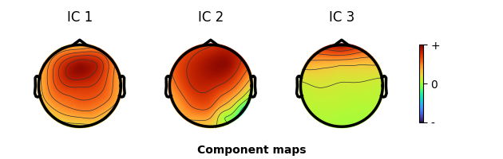

Note
Go to the end to download the full example code.
Reject Artifacts: Channels, Data, ASR, and ICA#
Headless walkthrough of the four EEGPrep artifact-rejection paths that mirror the EEGLAB “Reject artifacts” tutorial: bad channels, bad continuous data, automated cleaning with clean_rawdata/ASR, and ICA component rejection.
No GUI window is opened: browser and diagnostic helpers are called with
show=False and every pop_* call passes explicit parameters so no dialog
appears.
Load the tutorial dataset.
from pathlib import Path
import matplotlib
matplotlib.use("Agg")
import numpy as np
import eegprep
from eegprep import (
eeg_eegrej,
eegplot,
pop_clean_rawdata,
pop_icflag,
pop_iclabel,
pop_interp,
pop_loadset,
pop_rejchan,
pop_select,
pop_subcomp,
pop_topoplot,
vis_artifacts,
)
def _sample_data_dir() -> Path:
"""Locate the repository ``sample_data`` directory from this file."""
for parent in Path(eegprep.__file__).resolve().parents: # sphinx-gallery defines no __file__
candidate = parent / "sample_data"
if candidate.is_dir():
return candidate
raise FileNotFoundError("sample_data directory not found")
SAMPLE_DATA = _sample_data_dir()
EEG = pop_loadset(str(SAMPLE_DATA / "eeglab_data.set"))
print(f"loaded: {EEG['nbchan']} channels, {EEG['pnts']} samples, {EEG['srate']} Hz")
loaded: 32 channels, 30504 samples, 128.0 Hz
a. Remove bad channels#
indexonly="on" reports candidate channels without touching the data, so
you can review the measure before committing (GUI: Tools > Automatic channel
rejection).
_, bad_channels, measure = pop_rejchan(
EEG,
"elec",
list(range(1, EEG["nbchan"] + 1)),
"measure",
"kurt",
"norm",
"on",
"threshold",
5,
"indexonly",
"on",
gui=False,
)
print("bad channel indices (1-based):", bad_channels)
print("max |z| of kurtosis measure:", round(float(np.max(np.abs(measure))), 3))
# Drop them explicitly (Edit > Select data), then rebuild the montage.
bad_labels = [EEG["chanlocs"][index - 1]["labels"] for index in bad_channels]
EEG_dropped, sel_com = pop_select(EEG, "nochannel", bad_channels, gui=False, return_com=True)
print(sel_com)
print("after drop:", EEG_dropped["nbchan"], "channels; removed", bad_labels)
# Put the dropped channels back by spherical interpolation (Tools > Interpolate
# electrodes). Pass the original montage as a plain list of channel-location
# dictionaries; the interpolator restores the missing entries in place.
EEG_interp = pop_interp(EEG_dropped, list(EEG["chanlocs"]), "spherical")
print("after interpolation:", EEG_interp["nbchan"], "channels; restored", bad_labels)
bad channel indices (1-based): [1]
max |z| of kurtosis measure: 5.014
EEG = pop_select( EEG, 'nochannel', [1]);
after drop: 31 channels; removed ['FPz']
after interpolation: 32 channels; restored ['FPz']
b. Remove bad data (scrolling)#
eegplot(..., show=False) builds the same browser model the GUI renders,
which keeps the display settings testable without Qt.
model = eegplot(EEG, winlength=5, dispchans=16, show=False)
print("browser window (s):", model.state.winlength, "channels shown:", model.state.dispchans)
# Marks made by dragging in the browser become sample regions; apply them with
# eeg_eegrej (1-based inclusive sample bounds, EEGLAB convention).
regions = np.array([[1, 256], [1001, 1512]])
EEG_rej = eeg_eegrej(EEG, regions)
print("samples removed:", EEG["pnts"] - EEG_rej["pnts"])
print("boundary events:", sum(1 for ev in EEG_rej["event"] if str(ev.get("type")) == "boundary"))
browser window (s): 5.0 channels shown: 16
samples removed: 768
boundary events: 2
c. Automated rejection (clean_rawdata / ASR)#
GUI: Tools > Reject data using Clean Rawdata and ASR.
EEG_clean, clean_com = pop_clean_rawdata(
EEG,
FlatlineCriterion=5,
ChannelCriterion=0.8,
LineNoiseCriterion=4,
Highpass=[0.25, 0.75],
BurstCriterion=20,
WindowCriterion=0.25,
BurstRejection="off",
Distance="Euclidian",
return_com=True,
)
print(clean_com)
print("clean_rawdata result:", EEG_clean["nbchan"], "channels,", EEG_clean["pnts"], "samples")
removed = EEG_clean.get("etc", {}).get("clean_channel_mask")
if removed is not None:
kept = int(np.sum(np.asarray(removed, dtype=bool)))
print("channels kept by clean_channels:", kept, "of", EEG["nbchan"])
# vis_artifacts overlays original vs cleaned data; show=False keeps it headless.
diagnostics = vis_artifacts(EEG_clean, EEG, show=False)
print("vis_artifacts model:", type(diagnostics).__name__)
EEG = pop_clean_rawdata(EEG, 'FlatlineCriterion', 5, 'ChannelCriterion', 0.8, 'LineNoiseCriterion', 4, 'Highpass', [0.25 0.75], 'BurstCriterion', 20, 'WindowCriterion', 0.25, 'BurstRejection', 'off', 'Distance', 'Euclidian');
clean_rawdata result: 30 channels, 30376 samples
channels kept by clean_channels: 30 of 32
vis_artifacts model: dict
d. Independent Component Analysis#
The epoched sample set already carries an ICA decomposition, so this section reviews components, labels them with ICLabel, and subtracts artifact components. GUI equivalents: Tools > Decompose data by ICA, Tools > Inspect/label components by map, Tools > Classify components using ICLabel, Tools > Remove components from data.
EEG_ica = pop_loadset(str(SAMPLE_DATA / "eeglab_data_epochs_ica.set"))
print("ICA components:", EEG_ica["icaweights"].shape[0], "epochs:", EEG_ica["trials"])
# Component scalp maps without opening a window (Plot > Component maps > In 2-D).
figures = pop_topoplot(EEG_ica, 0, [1, 2, 3], "Component maps", [1, 3], 0, "electrodes", "off")
print("scalp-map figures:", len(figures))
# ICLabel requires the torch extra: pip install "eegprep[torch]". Without it
# pop_iclabel raises ImportError rather than degrading, so this example fails
# loudly instead of silently documenting a skipped step.
CLASSES = ("Brain", "Muscle", "Eye", "Heart", "Line Noise", "Channel Noise", "Other")
EEG_ica, label_com = pop_iclabel(EEG_ica, "default", return_com=True)
print(label_com)
probs = np.asarray(EEG_ica["etc"]["ic_classification"]["ICLabel"]["classifications"], dtype=float)
dominant = probs.argmax(axis=1)
print("dominant class counts:", {name: int(np.sum(dominant == k)) for k, name in enumerate(CLASSES)})
thresholds = np.array([[0, 0], [0.8, 1], [0.8, 1], [0, 0], [0, 0], [0, 0], [0, 0]])
EEG_ica, flag_com = pop_icflag(EEG_ica, thresholds, return_com=True)
print(flag_com)
flagged = np.flatnonzero(np.asarray(EEG_ica["reject"]["gcompreject"], dtype=bool)) + 1
artifact_components = flagged.tolist()
print("components to remove (1-based):", artifact_components)
EEG_pruned, sub_com = pop_subcomp(EEG_ica, artifact_components, 0, return_com=True)
print(sub_com)
print("components remaining:", EEG_pruned["icaweights"].shape[0])

ICA components: 32 epochs: 80
scalp-map figures: 1
EEG = pop_iclabel(EEG, 'default');
dominant class counts: {'Brain': 21, 'Muscle': 0, 'Eye': 2, 'Heart': 0, 'Line Noise': 6, 'Channel Noise': 0, 'Other': 3}
EEG = pop_icflag(EEG, thresholds=[0 0; 0.8 1; 0.8 1; 0 0; 0 0; 0 0; 0 0]);
components to remove (1-based): [3, 11]
EEG = pop_subcomp(EEG, [3 11], 0);
components remaining: 30
Total running time of the script: (0 minutes 8.906 seconds)